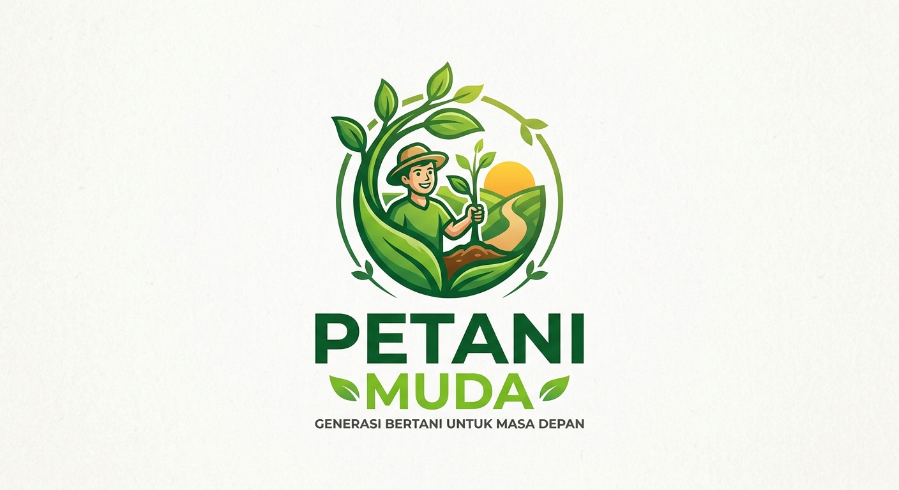

Analisis Branding Sektor Pertanian Indonesia

Proyek ini berisi analisis kekuatan branding sektor pertanian berdasarkan relevansi, kepercayaan publik, inovasi, daya tarik generasi muda, dan keberlanjutan.
| Aspek | Skor |
|---|---|
| Relevansi | 10/10 |
| Kepercayaan Publik | 9/10 |
| Citra Profesional | 7/10 |
| Inovasi | 8/10 |
| Daya Tarik Generasi Muda | ../10 |
| Keberlanjutan | ../10 |